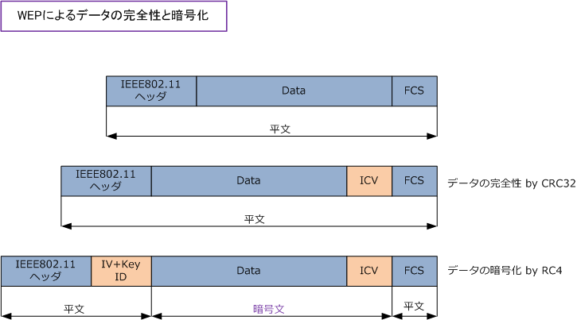
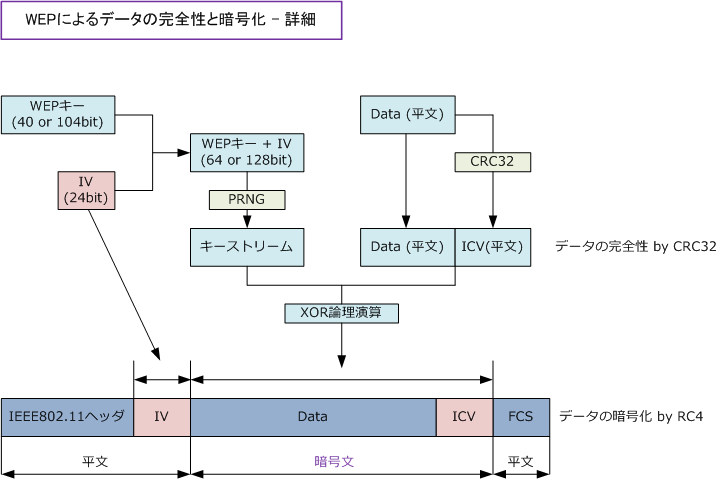
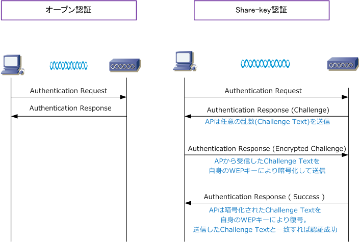

Wireless LAN - WEP ( Wired Equivalent Privacy )
WEP (Wired Equivalent Privacy) とは
WEPとは、無線LAN通信において使用される暗号化技術です。有線LANではパケットは物理ケーブル上で 伝送されるのに対して、無線LANではパケットは空気中の電波で伝送されることから通信傍受が容易です。 無線LANでは、WEPで通信パケットを暗号化することで有線LAN同様の安全性を持たせようとしています。 ※ 現在では、無線LANの暗号化技術において、脆弱性のあるWEPを使用することはほとんどありません。
WEPは、RC4 アルゴリズムをベースとした共通鍵暗号を採用しています。暗号化の際には64ビットまたは 128ビットの共通鍵が使用されます。無線LANではこの共通鍵をWEPキーと呼んでおり、送信側と受信側で 正常に暗号化と復号を行うために同じWEPキーを設定する必要があります。同じWEPキーを設定していない とデータの中身が見えない（正常な通信が不可）のでWEPキーは一種のパスワードと考えることもできます。 また、WEPはデータの暗号化だけではなくデータの完全性を保証する為にCRC32アルゴリズムを使用します。
| WEPの特徴 | |
|---|---|
| 共通鍵暗号の使用 | RC4 アルゴリズムをベースとしている |
| 一種の認証機能 | 送信側と受信側とで同じWEPキーを設定する必要があるため |
| 共通鍵の長さ | 40bit または 104bit のデータサイズ |
| 最終的な鍵の長さ | 64bit または 128bit (共通鍵のデータサイズに24ビットの IV が加えられる) |
| WEPキー（共通鍵）の文字数 - 40bit | ASCII文字を使用する場合、5文字。16進数を使用する場合、10文字。 |
| WEPキー（共通鍵）の文字数 - 104bit | ASCII文字を使用する場合、13文字。16進数を使用する場合、26文字。 |
| WEPの脆弱性 | 脆弱なパケット(Weak IV)を入手できればWEPキーが解読可 (FMS攻撃） |
| ICV (Integrity Checksum Value) の使用 | CRC32 アルゴリズムを使用する。実質的に改ざん検知ができない。 |
WEPによるデータの暗号化 & データの完全性の保証
WEPではデータの完全性を保証するために、IEEE802.11フレームのデータ部分からハッシュ値を計算します。 CRC32により求められたハッシュ値をICVと言います。このICVを、下図の通りDataとFCSの間に挿入します。 WEPではデータの暗号化のために、RC4により先のICVとデータ部分を暗号文とします。あわせて、暗号化で 使用される共通鍵の生成を担う24ビットのIVをIEEE802.11ヘッダとDataの間に挿入して最終形態になります。

WEPによる暗号化の処理をもう少し詳細に見てみましょう。データの暗号化のためには、「キーストリーム」 なるものが必要となります。キーストリームは、管理者が設定するWEPキー(40bit or 104bit)と IV(24bit)で 構成されたものをPRNG(擬似乱数ジェネレータ)を通して生成されるものです。そして、そのキーストリームと DataとICVをそれぞれ排他的論理和(XOR)を求めることで、最終的な暗号データが生成されることになります。

IEEE802.11における2つの認証方式
無線LAN接続の認証フェーズでは2種類の認証方式がある。1つは、Open認証(オープンシステム認証)です。 もう1つはShared-key認証(シェアードキー認証)です。Shared-key認証はWEPを使用する際に使用します。 ※ Windows 7 の無線LANの設定項目では、Open認証はオープンシステム、Shared-key認証は共有キーという用語を使用。
| 2種類の認証方式 ( 暗号化にWEPを採用した場合 ) | |
|---|---|
| Open認証 ( オープンシステム認証 ) |
WLAN端末からの認証要求があった場合、APは必ず認証成功フレームを送信する。 つまり、Open認証では必ず認証が成功するため、実質的な認証は行われていない。 ※ このオープン認証は、PCとAPとでSSIDが一致さえしていれば、通信可能となる。 |
| Shared-key認証 ( 共有キー認証 ) |
WLAN端末とAPは自身のWEPキーを利用することにより、WLAN端末の認証を行う。 ただし、Shared-key認証では認証の際に使用するWEPキーが、電波を不正に傍受 しているWLAN端末に見破られる可能性がある。中間者攻撃には脆弱な認証である。 |
※ 本来WEPキーは暗号化のために使用するのですが、Shared-key認証では「認証時にそのWEPキーを利用しよう」というもの。
実質的に認証が行われないOpen認証よりも、暗号化のために設定しているWEPキーを利用した認証方式で あるShared-key認証の方がセキュリティが高いように思えますが、Shared-key 認証の場合、中間者攻撃 などでWEPキーが見破られると不正認証とデータの不正傍受も行われてしまいます。一方、Open認証では 認証が成功することで、あるAPのESSに仲間入りすることができますが、不正認証はされるもののデータの 不正傍受は行われることはありません。以上のことから、認証方式は「Open認証」が推奨とされています。
ただし、Open認証において簡単に不正認証が行われることは問題であるので、Open認証を使用する場合は 実際の認証は、IEEE802.1X認証またはWeb認証などを実装することが推奨であり一般的な実装と言えます。

← 無線LAN - 初心者でも分かる無線LAN通信の流れ 無線LAN - ESSIDステルス、MACフィルタ、WEP脆弱性 →